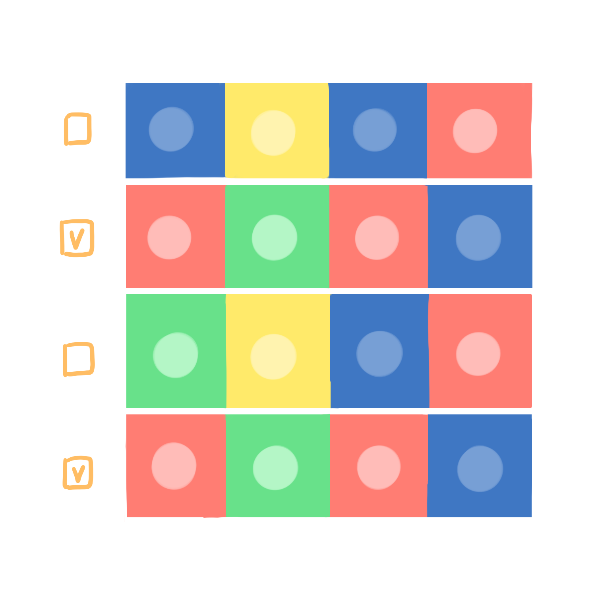
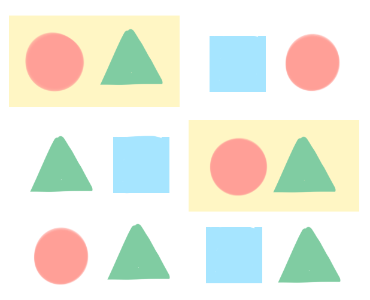

Decomposition 問題解析
Definition
 |
從英文字的字面意義，就是指「分解」，延伸解釋就是面對一個複雜問題、任務或專案時，能將資料、程序、問題拆解成較小、較易處理的部分。解決每一個小問題後，原先複雜的問題即被解決了。 |
Example
常遇到的是專案執行、軟硬體分析與建置。
Reference
http://barefootcas.org.uk/sample-resources/decomposition/
Google： https://www.google.com/edu/resources/programs/exploring-computational-thinking/#!ct-overview
to top
Pattern Recognition 模式辨識
Definition
|  |
模式辨識的定義就是在一群資料中（可以數字、文字、圖形、照片等不同形式）觀察樣式、趨勢或規則，以對資料進行描述、解釋、辨識、分類的過程。 |
Example
天氣預報、血液檢驗、心電圖、客戶分析等都是此類的例子。
最簡單的則從從小孩的遊戲中就可以發現。

在一組圖示中，找出規律、重複的圖案
Reference
Google: https://www.google.com/edu/resources/programs/exploring-computational-thinking/#!ct-overview
MBAlib: http://wiki.mbalib.com/zh-tw/%E6%A8%A1%E5%BC%8F%E8%AF%86%E5%88%AB
http://notepad.yehyeh.net/Content/DS/CH02/4.php
to top
Abstraction 抽象化
Definition
|
抽象化有兩個概念，一個是指去除細節以簡化並專注於重點的過程。也就是說能在複雜的事物上忽略其部分屬性，以注意到其他屬性、特徵的行為。另一個是指能辨識出共同的核心或本質的過程，即一般化（ generalization ），也就是能在例子中萃取共通屬性形成一般概念的過程。 |
Example
日常生活最常見的例子就是捷運路網圖。
Reference
Google map
台北大眾捷運公司
Kramer, J. (2007). Is abstraction the key to computing?. Communications of the ACM, 50(4), 36-42.
to top
Algorithm 演算法
Definition
|
運算思維所談的演算法是指產出有序指令以解決問題或完成任務的思考過程。設計演算法時應包含步驟（steps）與規則（rules），步驟能提供程序與引導，完成任務則需依據原則執行。 |
Example
我們從小接觸的實驗程序、寫故事，目前常見的宅急便配送等都是演算法思維的例子。
Reference
Google： https://www.google.com/edu/resources/programs/exploring-computational-thinking/#!ct-overview
CAS Barefoot: http://barefootcas.org.uk/sample-resources/algorithms/
CAS Barefoot: http://barefootcas.org.uk/sample-resources/algorithms/
to top